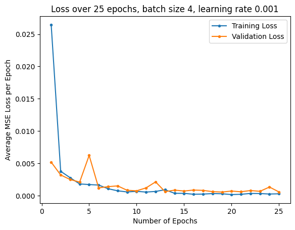
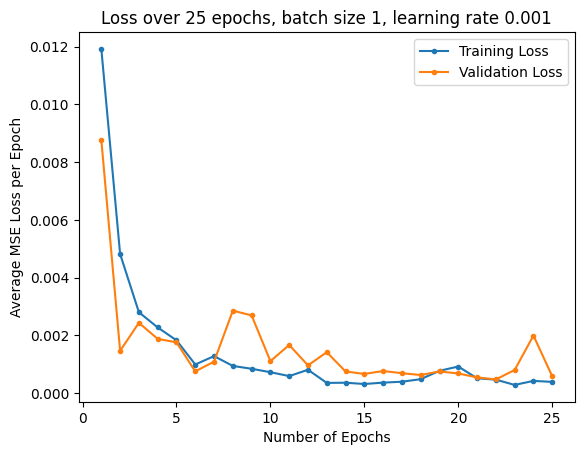
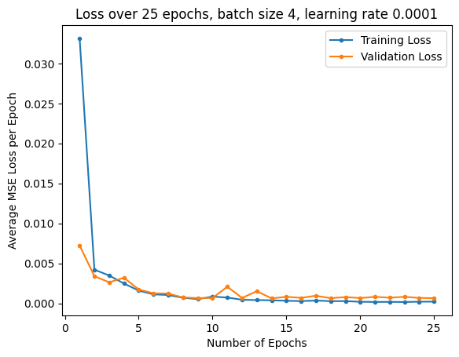
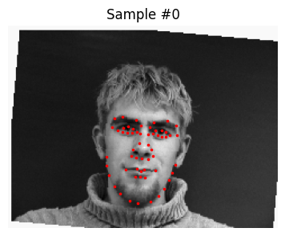
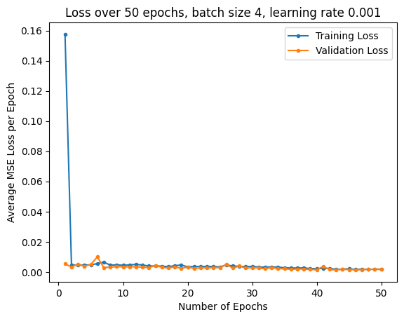
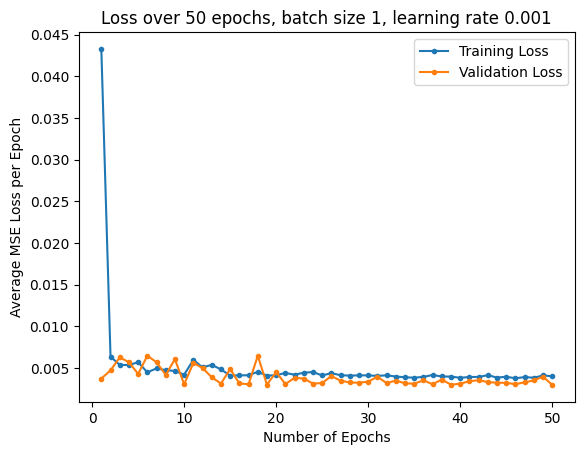
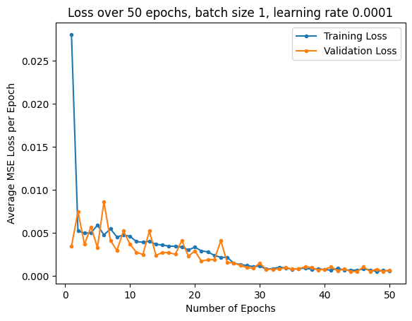
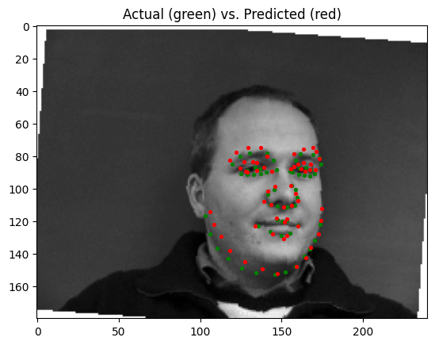
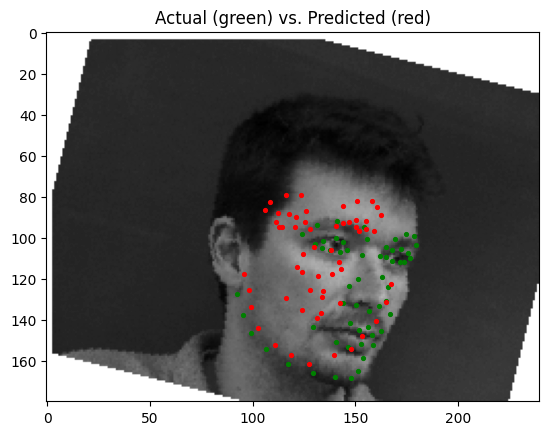

Project Overview
In this project, we explore the use of neural networks for facial keypoint detection, using our own smaller, custom architecture, and larger pre-established architectures.
Part 1: Nose Tip Detection
In this part, I trained a small neural net with my own custom architecture to on the IMM Face Database, in order to detect nose points.
To use the IMM Face Database, I implemented a custom dataloader in PyTorch, which pre-processes the data by converting to grayscale, normalizing its values, and resizing it to 80x60. Pictured below are some samples from the dataset, with red points labeling the nose points:
| Sample 1 | Sample 2 | Sample 3 | Sample 4 |
|---|---|---|---|
I trained a model with the following architecture:
Experimenting with different paramters, I used MSE loss and an Adam optimizer with learning rates of 0.001 and 0.0001, with batch sizes of 1 and 4. I trained for 25 epochs. Below are the training and validation loss plots:
| LR 0.001, Batch Size 4 | LR 0.001, Batch Size 1 | LR 0.0001, Batch Size 4 |
|---|---|---|
|  |
 |
 |
The best parameters for the model were to have a learning rate of 0.0001 and a batch size of 4. Pictured below are some predictions from the model, with predictions in red, and ground truth points in green:
| Good Prediction | Good Prediction | Poor Prediction | Poor Prediction |
|---|---|---|---|
As seen above, the model does well when predicting nose points on a front-facing facial image, but performs more poorly when trying to predict nose points on 3/4 (turned to the left or right) facial images. This may be because of the higher variance in nose point positions in 3/4's images compared to front-facing images.
Part 2: Full Facial Keypoints Detection
Since we are now predicting the entire set of facial keypoints across images, we work with larger images of size 240x180. We also implement data augmentation with our own custom transforms, allowing for random amounts of color jitter, rotation, and shifts across images in the dataset.
Pictured below are some samples from the augmented dataset:
| Sample 1 | Sample 2 | Sample 3 | Sample 4 |
|---|---|---|---|
|  |
Expanding upon my previous model, I used the following architecture:
Experimenting with different paramters, I used MSE loss and an Adam optimizer with learning rates of 0.001 and 0.0001, with batch sizes of 1 and 4. I trained for 25 epochs. Below are the training and validation loss plots:
| LR 0.001, Batch Size 4 | LR 0.001, Batch Size 1 | LR 0.0001, Batch Size 1 |
|---|---|---|
|  |
 |
 |
The best parameters for the model were a learning rate of 0.001 and a batch size of 4. Pictured below are some predictions from the model, with predictions in red, and ground truth points in green:
| Good Prediction | Good Prediction | Poor Prediction | Poor Prediction |
|---|---|---|---|
|  |
 |
 |
 |
Pictured below are the filters from the neural net: